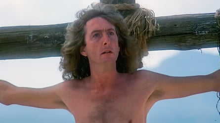
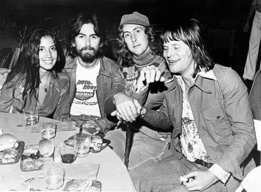
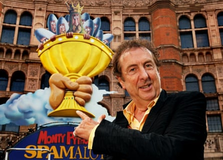
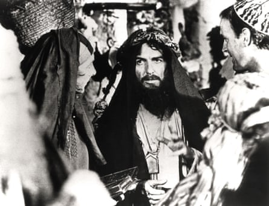
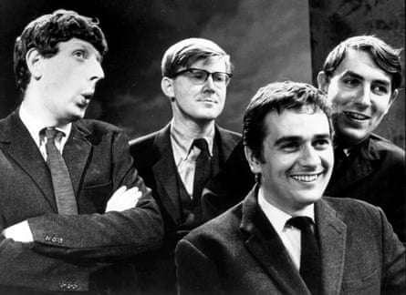
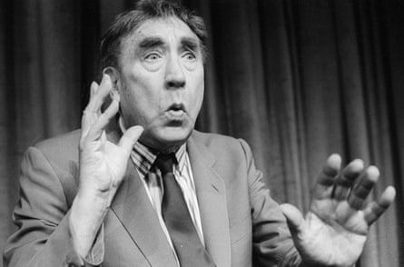
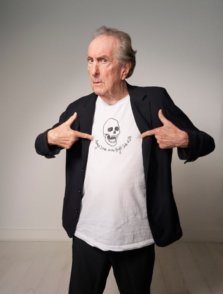
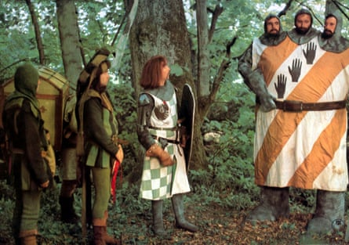
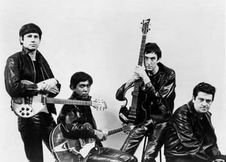
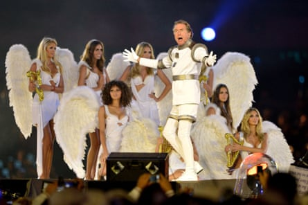

W hen news broke in 2021 that Eric Idle had been diagnosed with pancreatic cancer, dismay was followed by relief when he survived to get the all-clear. Now 83, Idle is thriving and about to embark on his first UK tour since 1973.
Over haddock and chips in London last month, a gentle and friendly Idle answered questions submitted by readers and fellow writers, actors and comedians about his time as a Python, Broadway smash Spamalot – his musical adaptation of Monty Python and the Holy Grail – as well as selfies, Peter Cook and why he feels sorry for the royals.
What’s genuinely funny about Donald Trump? Tracy Ullman There’s nothing funny about Donald Trump. What will be funny is when he leaves office and we have a big party and dance in the streets. Trump seems to have no end of capacity for stupidity. I think he’s a treasonous monster who works for Putin.
Every summer I go to France because I can’t stand the news. I can’t stand hearing about that man every minute of every day. They’re completely obsessed by him in the US. It’s like they’re addicted to him.
Since you have made so many people happy to laugh or sing out loud, what’s the best thing in a day that gives you a smile? traleebob My friends are either comedians or musicians, so we play and sing all the time and I like that. It’s lovely because you are not yourself any more. You are part of this human thing going on. What makes me proudest is that Always Look on the Bright Side of Life has become a funeral song. I find that very moving.
Idle as Mr Cheeky, looking on the bright side in Monty Python’s Life of Brian, 1979.Photograph: Landmark Media/Alamy
You’ve taught generations to laugh at death, class, religion and even bad theatre. Is there anything left you haven’t skewered that you still dream of turning into a joke? Catherine Zeta-Jones That’s a difficult question. If I thought of it, I would! I think the point of comedy is to examine everything. It’s very scary now because they’re stopping comedians at the border and if they have pictures of Trump on their phone they don’t like, they don’t let them in.
I’ve had a green card for about 28 years. I’d be proud to be thrown out because I’d be in very select company. The last English comedian to be thrown out of America for political reasons was Charlie Chaplin .
Whether you can go too far in comedy depends on who you are. If you’re Lenny Bruce, you would begin by going too far. But I do take note of it. If I’m going to do a tour, I will ask my goddaughter: can I say this? There are certain categories of people you don’t want to offend, who have been laughed at, and that was completely unjust and unfair. But I think you are obliged to question things to have any relevance at all. Otherwise, you’re just telling jokes.
I know people coming up and asking for selfies and such would be a problem in the real world, but a re you able to go and just sit in a pub for a few drinks or have a Sunday dinner in peace in public? Harrymeadows I used to be really unpleasant. Then Robin Williams taught me that that sort of encounter is very important to people. So be nice, not brusque, because they’ll never forget it. But you don’t want to spend 20 minutes with them, so when they come up, I say: “I’m Eric, what’s your name?” Then they become a person and see you as a person, too. There’s a human connection, not some stupid, starry thing. It becomes more normal and easier to leave.
Olivia Arias, with George Harrison, who she married in 1978, Eric Idle and Tery Gilliam at the premiere of Monty Python and the Holy Grail in Hollywood in July 1975.Photograph: Trinity Mirror/Mirrorpix/Alamy
George Harrison agreed to fund Life of Brian because he wanted to see it. If he hadn’t been so forward-thinking and unfazed by controversy, might we have lost an iconic, groundbreaking movie? Les Dennis He changed my life. We were very close. I was there at his deathbed. He wasn’t frightened of death. He thought he’d escape rebirth . I said: “I’d give anything to be reborn.” Only thing we ever disagreed on. He still laughed when I said it.
A lot of being funny is the lack of a censor mechanism. I said at George’s funeral: “I’d like to thank Marlboro, without whom you wouldn’t be here this morning.” Huge laugh. It’s really not the right thing to say, but also, let’s name the names of people responsible. The way people respond to comedy is not to think and then decide to laugh. They find themselves laughing spontaneously. And they also start to trust that this person will tell the truth no matter what.
I think aliens have a sense of humour, because it’s about self-knowledge. Every society has one, as do some animals. AI, meanwhile, can only copy. I don’t think it would ever say something remarkably and originally funny. That’s its weakness.
Do you listen to audiobooks? RDMiller I’m a big reader but it’s the voice of the author I want to hear in my head. I think a lot of the audiobook business is a scam. They pay badly. They rip you off and you work for days reading the damn thing. And I never want to hear my voice back.
I’ve read , presumably based on Monty Python and Beyond the Fringe , that nice people went to Oxford, and not so nice people went to Cambridge. Any thoughts on this ? Maldontyke That’s absolute bollocks. All politicians went to Oxford, because they do PPE, and the nice, clever people went to Cambridge. I like Cambridge people.
Which comedian, from any time, do you believe would have complimented the Pythons ensemble? BanjoPlayingFool Dan Aykroyd, because he was a writer and a performer and could melt his ego into a crowd. On the whole, we didn’t try and upstage each other on Python. You were supportive.
Idle in front of Palace theatre, London, while themusical Spamalotwas being set up in 2006.Photograph: Linda Nylind/The Guardian
Without going into specific facts and figures, h ow much more money have you made from Spamalot than Monty Python’s Flying Circus and , given that many of the core elements were generated from the efforts of the whole circus, do your former comedy teammates get a ton of royalties from Spamalot? (I’m assuming not). DrJWCC They got more fucking money than they’ve ever been grateful for. They got fucking millions and they’re miserable and horrible and bitchy about it. I spent 20 years working for Python and then two years on the O2 show. They were there for two weeks.
I’m not really motivated by money, to be honest. Anyway, the producers get all the fucking money and divide it up according to the contract. Someone sued us for years, saying I was paying the Pythons money from my back pocket. And I said: why would I risk going to an American jail to give John Cleese more money?
Pythons always played the women – why? Michael Palin told me it was because you were all scared of them. Tracy Ullman Well, he’s definitely scared of them. I wasn’t scared of women because when I was president of Footlights, then an all-male club, I changed the laws to admit women. The first woman who came in was Germaine Greer. It’s always hard to find a funny woman if you don’t admit them to the club. I was very proud of doing that.
I think the reason was that six people were just trying to grab a decent role. But if the joke was about sex, it was better if we had a real woman – it was weird otherwise. But if it was about our mothers, it was funnier it we played them.
I think some of them were scared of women. John Cleese and Graham Chapman were very nasty to Miriam Margolyes and she’s hated them ever since. I always have to remind her that we were friends and I stayed at her apartment. It wasn’t all of us. But most of that generation were terribly cruel.
In the early 70s, I was told that “Nurse Idle ”, who gave me my school vaccinations, was in fact your mum. Could this have been true , or have I been living under a heinous misapprehension for 50 odd years. If it is true, then it counts as the closest I’ve ever got to a celebrity ConradTurner Oh yes, that’s true. She did give school vaccinations and she would have hated Robert F Kennedy Jr because she knew how important they were.
I love your songs and sing them frequently, including the now unacceptable I Like Chinese , which increasingly just sounds like pragmatic foreign policy. But h ow did it feel in those early days being the Python who wasn’t part of a writing team, given there was Chapman/Cleese and Jones/Palin, and then Gilliam as the fully odd one out? Steve Coogan I don’t like being part of a writing team because I don’t like talking before lunch. I wake about 5:30am and love discovering what’s in your mind. You don’t judge it, you just find it, write it and create it, and then do a lot of rewriting.
‘We bonded immediately’ … Idle, left, with George Harrison and John Cleese in Monty Python’s Life of Brian.Photograph: Pictorial Press Ltd/Alamy
What was hard was that the other Pythons had two votes to one. When I first met George Harrison, we bonded immediately and talked all night and I realised we played the same roles in our groups. There were these two heavy, powerful blocs, and we were in the middle. We didn’t have as much power but we learned a lot from it.
And actually I did find somebody I could work with: the musician John Du Prez, who was a brilliant partner for 44 years. He could do everything I couldn’t and it was fabulous.
Other than George Harrison, what was your relationship like with the other three Beatles? Did you count them as friends too? Jwillchad I’m still a friend of Ringo’s, and Paul’s always very nice and friendly, but we’re not close.
If you could have written one song, which one would it be, and why? ThankYouJohn Song to the Moon, from the opera Rusalka by Dvořák. Beautiful. Unbelievably fine. But I don’t feel: oh gosh, I wish I’d written, say, a Beatles song, because they did it so well.
You always seemed to perform so unselfconsciously and with so much abandon and joy – and write so efficiently and quickly and confidently. Was there ever a time you were insecure about your work, either as a writer or an acto r? And if so, what did you do to overcome those self-doubts and nerves? Hank Azaria I think the answer to that is ars est celare artem – “the art is to hide the art”, which is the motto of the Footlights. There’s a great deal of work and effort that goes into making it look effortless. The secret of performing comedy is to really know what you’re gonna do.
Whenever you start, you’re insecure. If you feel secure, you’re a bit of an arsehole. And even now, I’m never secure, but always exploring and trying to improve. I don’t feel I write; I feel I rewrite. Spamalot was about 17 drafts. It got better as my mind resolved things. That’s what I do when I perform: I write a draft, and another, and I keep going until I’m confident with every bit. It’s always a theorem for me: if I say this, they may laugh. And then you find out.
I remember once that the Pythons were on the Tonight Show. We’d been over in Canada touring and they laughed like crazy at everything we did. But on the Tonight Show they were just silent. We did 20 minutes, then ran outside and we laughed and laughed and laughed. There’s nothing funnier than people not laughing at you.
The day this will be published is my birthday, so, related to that, w hat has been your favourite celebration of your birthday? Nanu I think the older you get, the less you like to celebrate your birthday. On my 80th, I had my friend Puddles do a Pity Party. I don’t like being the centre of attention like that. It’s a bit embarrassing. In my private life, I’m not well-known; I come somewhere below the dogs. Nobody goes: “Oh, good morning, legend!” I live a very quiet life.
Peter Cook, right, with the cast of Beyond the Fringe, from left, Jonathan Miller, Alan Bennett, and Dudley Moore in 1964.Photograph: Ronald Grant
Which comedian, living or dead, do you most admire? Jane Leeves Peter Cook, Billy Connolly, Robin Williams, Eddie Izzard. I would say my comedic voice is somewhere between Eric Morecambe and Peter Cook. When I was growing up, I loved Frankie Howerd and Jimmy Edwards. Comedians used to go from place to place doing the same act and lots of them were really funny but TV finished them off, because they couldn’t adapt or write enough new material.
In the oncoming revolution that may sweep the UK, whose side will you be on – and what to do with the royals? Darkness I don’t think there’ll be a revolution in England. They’ve already screwed my life up, anyway. Eight years ago [pre-Brexit], I could live in any country in Europe. Now, I can only spend three months a year in my house in Provence, and I built the bloody place.
I’ve lived in LA for 30 years, but it seems to me that the UK class system is still just as prevalent. I think it’s a complete waste of time and it filters down. It stops some people – and it spoils others.
Inspiration … Frankie Howerd at the Lyric, Hammersmith, in 1990.Photograph: Tristram Kenton/The Guardian
I feel really sorry for the royals. Sometimes they’re very nice and human, and other times they become monsters, because if you are called “Sir” at five, you are putting trouble into people. King Charles is very funny. He was at Cambridge. He did comedy and loved Spike Milligan and would always come to Billy Connolly’s. But it’s not a society I would be happy to live in.
The thing I like about America is it created itself; it’s the only place that wrote a script for itself. But it needs a rewrite to bring it up to date. The second amendment says at 16 you are allowed a major weapon of war. I really think they’re serious about wanting to get rid of liberals and lefties. They’re very crazy.
You’ve described feeling abandoned when you were placed in a boarding school aged seven, and you’ve also said you like living in the US because you’re “more comfortable not feeling a part of everything”. Do you think the sense of detachment that comes from being a foreigner is always a response to childhood trauma? Charlesosbourneprague Yes, I was abandoned, but I like being a foreigner. I like living in France because they’re very nice to me, and it isn’t my culture so you don’t have to worry. And it’s slightly like that in America.
With his daughter, Lily, and wife, Tania, in Hollywood, in 2002.Photograph: Maury Phillips/WireImage
When I’m in the UK, I miss the wife and the daughter, but when I’m in the US I don’t really miss the UK because I have the football and cricket on.
Are you going to smash Titus Andronicus or Iago for us one of these days? Or is “shouting at night”, as Ralph Richardson once called it , too damned tiring? I’d queue overnight for you. Janet Suzman No, I’ve done my Shakespeare, back in Cambridge. I couldn’t do it every night. I don’t know how people do Broadway – eight performances a week! On tour, I insist on having a night off after each show. The audience want your energy. You need to be fully there and as confident as possible in order to relax them.
Janet was brilliant in Nuns on the Run. Amazing actor. And Robbie Coltrane was wonderful. Michael Palin turned that part down, but it was much better with Robbie. He was just so funny as a nun.
What didn’t people realise about Robin Williams? bumble That he was so sick. I’d invited him to perform in the O2 shows. He said he didn’t want to and I said: ‘Never mind, just come to the last night.’ He was going to but didn’t. And shortly after came this really shocking thing: he killed himself. Next door to his wife, too.
It makes you very paranoid. The only good thing about Robin’s death is that Lewy body dementia is more recognised as a disease and people put money into it. His suffering was enormous.
Some of the songs you have written have become iconic. Did you realise that this was the direction your abilities were heading in as a young Python? Suzy Eddie Izzard I began to play guitar aged 12 when Elvis came up. At Cambridge, I first learned a lot from Bill Oddie, who wrote really funny songs with great lyrics, like Flanders and Swann or Tom Lehrer.
I just wonder, in your view, w hat you think is the solution to the narcissistic oafs of this world getting into power? TheRandinator People with narcissistic personality disorder are always headed for power, so I would have them psychoanalysed before they can be elected. Mental health checks would stop them.
Do you know where I left my keys? David Mamet That’s very funny. David once said the funniest thing he ever heard was the speech I made at Mike Nichols’ 75th birthday. I remember looking up and thinking: “Oh shit, I’m killing David Mamet.” He actually couldn’t breathe.
Is there anything you regret? Any piece of work in your past you now think of as rubbish? Bernardgeorgeshore I don’t think of things as rubbish, only unfinished writing.
Was Peter Cook the funniest person you’ve ever known? MFLOON Yes. Beyond the Fringe changed my life. I saw that and that’s all I wanted to be. I was at boarding school and didn’t know you were allowed to laugh at the queen and the army and religion. It was very liberating.
I f you hadn’t pursued a life as a writer and performer, i s there anything else you might have found a career in? Jane Leeves I dread to think. The great thing about doing comedy is you never have to have a proper job. I don’t think of my life as a career; I think of it as a life.
‘If you’re enjoying yourself, then you’re not acting or giving, you’re just having a good time.’Photograph: Suki Dhanda/The Guardian
In the Python TV shows and movies , you seemed to be enjoying yourself the most. Were you? PookieFugglestein Some things in Python were very enjoyable and some were not. Holy Grail was cold and miserable. Sometimes that makes it funny. One of the worst things you can have in comedy is enough money.
Python was quite a lot of arguing and fights and good work is often like that. The best thing about showbiz is when it’s over. I think if you’re enjoying yourself, then you’re not acting or giving, you’re just having a good time. Well, that’s not funny.
Neil Innes, Eric Idle, Terry Jones, Graham Chapman and Michael Palin in Monty Python and the Holy Grail, 1975.Photograph: Ronald Grant
You’re quite rightly celebrated as pioneering, or at least bringing to mainstream attention, new types of comedy – surrealist, satirical, mockumentary – but is there anything that’s struck you as new or inventive in comedy that’s come out in the last 20 or so years that’s made you think “I wish I’d written that”? LarboIreland I watch very little. I see a lot of Netflix thrillers. I don’t go to the movies because they’re very boring and for 12-year-olds. I don’t watch news and I don’t read newspapers.
Have you got any tickets for Chelsea? Bill Oddie Bill and I used to have Chelsea season tickets next to each other in the 60s. I learned a lot about songwriting from observing Bill. He was effortless. I don’t think he feels that confident about himself any more, which is a shame.
How did the Sit on My Face song get created? How did you come up with that ? Mooreelat It’s actually based on a very famous song called Let the Rest of the World Go By by Vera Lynn. Maggie Smith gave me a beautiful leatherbound copy of the lyrics to Sit on My Face because when she was working on a film with Michael Palin, she would make the entire crew sing it every day before they began. Isn’t that sweet?
Who do you find the most challenging to work with, actors or comedians? Jane Leeves I appreciate actors more and more. I learned so much from watching Mike Nichols giving notes. When he was firm, he’d sometimes make the actors cry. But he’d always say: you gotta take it seriously. If you don’t, why should the audience?
From your memoirs, you always seem very appreciative of the female form. Is that still the case? bumble I’m very grateful for it. But I’ve been with my current wife for 48 years, so I have got used to it.
Do you get back to South Shields these days? Fromthenorth Not since I was two. I was hoping to go this time, and to Wolverhampton, where I haven’t been since I was 16. But I don’t think we’re playing nearby.
The Rutles in 1978 … Ron Nasty (Neil Innes); Stig O’Hara (Ricky Fataar); Dirk McQuickly (Eric Idle), and Barry Worm (John Halsey), posing for their TV mockumentary All You Need Is Cash.Photograph: Michael Ochs Archives/Getty Images
Of all the projects you worked on, which was your favourite? Nicens_boi The Rutles and Spamalot were both just fabulous times. One of the things I talk about in the show, I call Mock and Roll, because we were all the same generation. The art school kids went into music, and we went into comedy. My theory is that Python is the first group of Mock and Roll, because we ended up in the Hollywood Bowl, like the Beatles. And I think the second group in Mock and Roll was Saturday Night Live. On the first show I hosted, Jim Belushi impersonated Joe Cocker to his face. They sang together and there was something magical about that.
Are you happy to be captured by AI for posthumous performances and royalties? Tracy Ullman They don’t pay royalties. I always felt that we ought to protect our images after I saw that tacky advert with Fred Astaire and the vacuum cleaner. I felt very bad about that. So I felt that we Pythons ought to have done something to protect our image in a way that’s appropriate. But I don’t think there is a way that’s appropriate.
Looking on the bright side … Idle performs during the closing ceremony of the London 2012 Olympics.Photograph: Jeff J Mitchell/Getty Images
I have had my image done in one of those extraordinary machines where 40 cameras capture you from every angle. It was for a film they wanted to make sure they could finish. But it worries me. I don’t trust AI. I mean, look at how many times you have to correct a word. It completely misreads you. ChatGPT writing essays really bothers me. The point is to find out what we think, not what a machine thinks.
Looking back on your career, from Monty Python’s surreal comedy to Spamalot and beyond, w hat do you think satire can still achieve in today’s world and has its power changed since the Python days? WeirdDug Python’s not satire. It’s the opposite. Satire ends, it’s dead. You don’t watch early episodes of Saturday Night Live and think: “Oh, Gerald Ford fell downstairs!” Python was always generic comedy and that survives longer.
Who was your favourite Arthur King in Spamalot? Just kidding. As you know, it remains one of the best jobs I’ll ever have. Is there a job or jobs that made you think: “Blimey, I’m a lucky bugger’? Sanjeev Baskar The Olympic games closing ceremony in 2012 , when I sang Always Look on the Bright Side of Life in front of 2 billion people, live. We never did a dress rehearsal. That was my first time on the stage. But you just get on and look like you know what you’re doing. After, I turned to this lovely lady, Susan Bullock, who’d sung with me, and said: “How did it go?” She said: “Are you kidding?”
Also, the American Film Institute celebration of Mike Nichols. I came on after Simon and Garfunkel, dressed as Emma Thompson in Angels in America with huge wings. I was looking at Oprah and Spielberg and all these people in the audience and said to myself: “I love my life.”